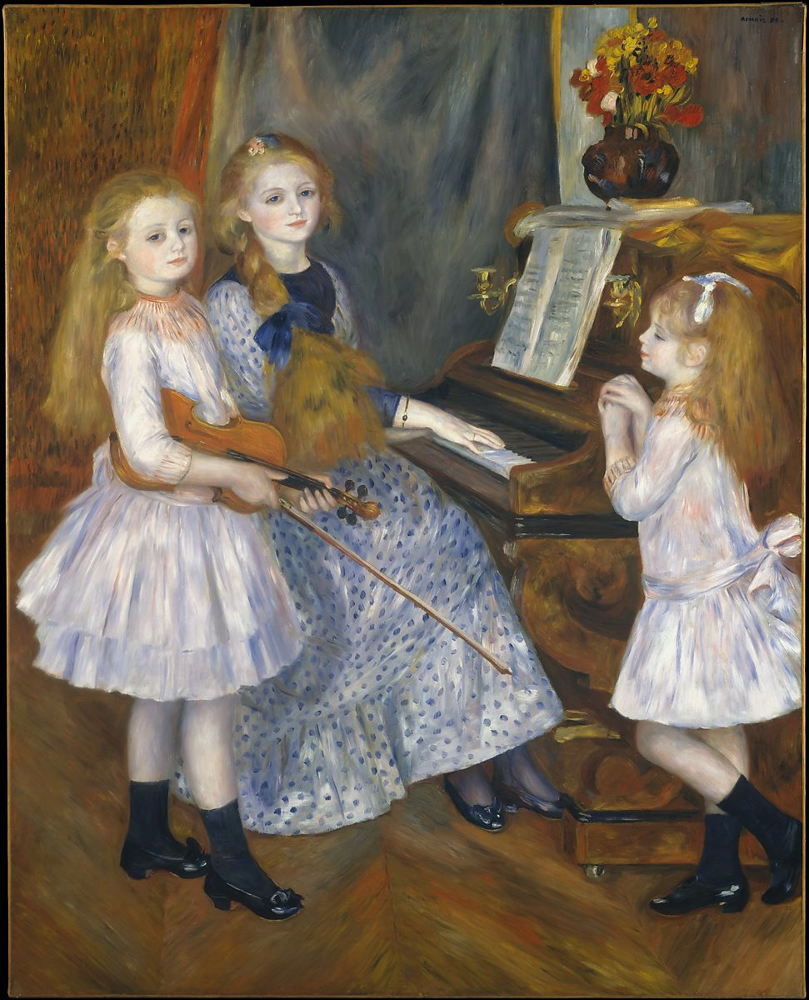

<head>
<meta charset="UTF-8" />
<meta name="keywords" content="drawing, painting" />
<meta name="description" content="drawings by Sunjy" />
<title>Sunjy</title>
<link rel="shortcut icon" type="image/x-icon" href="../../mImages/mCommon/favicon.ico" media="screen" />
<link rel="stylesheet" type="text/css" href="../../mCsses/mCommon/mCssA.css" />
<link rel="stylesheet" type="text/css" href="../../mCsses/mCommon/mCssB.css" />
<link rel="stylesheet" type="text/css" href="../../mCsses/mCommon/mCssC.css" />
<link rel="stylesheet" type="text/css" href="../../mCsses/mCommon/mCssD.css" />
<link rel="stylesheet" type="text/css" href="../../mCsses/mContent/mCssA.css" />
<link rel="stylesheet" type="text/css" href="../../mCsses/mContent/mCssB.css" />
<link rel="stylesheet" type="text/css" href="../../mCsses/mContent/mCssC.css" />
<link rel="stylesheet" type="text/css" href="../../mCsses/mContent/mCssD.css" />
</head>
<script type="text/javascript" src="../../mScripts/mContent/mContentAA.js" /></script>
<script type="text/javascript" src="../../mScripts/mContent/mContentAB.js" /></script>
<script type="text/javascript" src="../../mScripts/mContent/mContentAC.js" /></script>
<script type="text/javascript" src="../../mScripts/mContent/mContentAD.js" /></script>
<script type="text/javascript"></script> 
<script type="text/javascript">
document.write('<div class="mImgAbsolute"></div>');
/*
document.write('<p class="mFontSizeBColor" />From a white paper...</p>');
document.write('<table class="center"><tr><td>');
document.write('');
document.write('</td></tr></table>');
*/
</script>


<script type="text/javascript">
document.write('<p class="mFontSizeBColor" />The Daughters of Catulle Mendes, Huguette, Claudine, and Helyonne</p>');
document.write('<p class="mFontSizeSColor" />By Pierre-Auguste Renoir, 1888. Hoping to recapture the success he had achieved with <i>Madame Georges Charpentier and Her Children</i> at the Salon of 1879, Renoir sought to paint the daughters of his friend Catulle Mendès. In addition to the girls’ manifest charm, he undoubtedly counted on the notoriety of their bohemian parents to gain attention: their father was a Symbolist poet and publisher, and their mother was the virtuoso pianist Augusta Holmès. Renoir completed the commission in a matter of weeks and immediately exhibited the large canvas in May 1888, but the response to his new manner of painting, with its intense hues and schematized faces, was unenthusiastic. </p>');
document.write('<table class="center" /><tr><td>');
document.write('Madame Georges Charpentier and Her Children</i> at the Salon of 1879, Renoir sought to paint the daughters of his friend Catulle Mendès. In addition to the girls’ manifest charm, he undoubtedly counted on the notoriety of their bohemian parents to gain attention: their father was a Symbolist poet and publisher, and their mother was the virtuoso pianist Augusta Holmès. Renoir completed the commission in a matter of weeks and immediately exhibited the large canvas in May 1888, but the response to his new manner of painting, with its intense hues and schematized faces, was unenthusiastic. " />');
document.write('</td></tr></table>');
</script>


